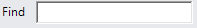

Compiles the script into Python bytecode, which can then be executed by the application. That is, you are saving the script, and this should always be done before you run a simulation. Note at compiling messages, errors and any exceptions will be printed in the Output panel and the script is automatically compiled when you exit its editor.

Tracks the execution of the script during a simulation to allow you to view which line of code is being executed at a given moment. Generally, tracing is used to debug a script (find and resolve errors) as well as to understand how a script performs based on the conditions of your layout.

Runs the script until it reaches the current line of the cursor/caret in the editor. Generally, running to cursor is used to debug a script in which you are testing if the script can reach a certain line of code.

Runs the script so that the current line of code is executed in order to move the script one step forward in its execution. Generally, stepping is used to walk through the sequence of a script one line at a time in order to verify expected outcomes.
Allows you to insert a code snippet in the script.
Removes selected code from the script, and then copies that code to the clipboard.

Copies selected code in the script to the clipboard.
Inserts code from the clipboard to the script.
Cancels the last edit performed in the script.

Executes the last undone edit performed in the script.
Toggles the background color and syntax highlighting.

Allows you to search the script for items matching keywords in the Search box.

Moves the cursor to the next search result in the script.

Moves the cursor to the previous search result in the script.

Highlights all search results in the script.
Removes the highlights assigned to search results in the script.